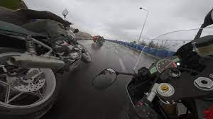
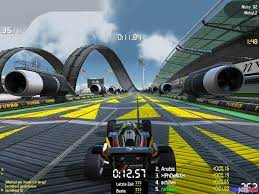

Ride 4
Ride es un videojuego de carreras de motos desarrollado y publicado por Milestone srl . El juego se lanzó el 27 de marzo de 2015 en Europa y el 6 de octubre de 2015 en Norteamérica para Microsoft Windows , PlayStation 3 , PlayStation 4 , Xbox One y Xbox 360 .
Muchos críticos describieron el juego como "Forza Motorsport con bicicletas".También se señaló que era más accesible para los recién llegados que otros juegos de bicicletas.Una queja fueron los largos tiempos de carga. El juego alcanzó el número 10 en las listas de ventas de PS3 del Reino Unido y el número 13 en las listas de PS4.
RaceRoom Racing Experience
RaceRoom Racing Experience es un simulador de carreras gratuito para Microsoft Windows, desarrollado por Sector3 Studios (anteriormente conocido como SimBin Studios) y publicado por RaceRoom Entertainment AG. Su objetivo es proporcionar una auténtica experiencia de carreras a través de modelos detallados de coches y pistas, así como comportamientos y sonidos realistas de los coches. El juego ofrece una selección de autos de carreras y pistas gratuitos para conducir en los modos de juego multijugador y para un solo jugador. Las competencias patrocinadas y otros eventos gratuitos permiten a los usuarios usar contenido de juego premium sin costo alguno.
RaceRoom ofrece muchos modos de juego diferentes, como carreras multijugador, campeonatos personalizados, carreras individuales contra IA, práctica, desafíos de clasificación y competiciones en línea. La simulación también incluye un portal en línea que realiza un seguimiento de las estadísticas de los jugadores y las entradas de la tabla de clasificación que sirven como plataforma para las actividades de los jugadores. El simulador también es compatible con la realidad virtual a través de Valve Index , HTC Vive , Oculus Rift o Windows Mixed Reality .
Engine Evolution 2022
Este juego fue creado durante mis estudios en la Universidad Charles de Praga. Hice la mayor parte del juego solo. ¡Espero que lo disfrute! Mi objetivo es capturar 150 años de carreras en un solo juego algún día.
Los controles están lo suficientemente simplificados como para seguir brindándote la pasión de montar, pero no demasiado complejos como para que te tome horas aprender. Se enfoca principalmente en brindar a los jugadores el mejor disfrute posible de las peleas de carreras. El núcleo del juego son carreras cortas y dinámicas con una alta densidad de acción. La sensación del viaje recuerda mucho a los juegos más antiguos, no esperes un simulador hardcore. Por otro lado, no es un juego de carreras de karts: hay física y debes tener eso en cuenta.
Vacuum Pilot
Vacuum Pilot es un juego de carreras en 2D con controles fáciles de aprender pero difíciles de dominar en base al movimiento del ratón.
Utiliza el botón izquierdo del ratón para acelerar hacia la dirección de tu cursor. Conservarás la mayor parte de tu impulso, por lo que puedes utilizarlo para esquivar ligeramente las esquinas y otros obstáculos. ¡Cuanto más juegues, más mejorarás y subirás en las tablas de clasificación en poco tiempo!
TrackMania Nations Forever
Un juego gratuito, en el sentido más literal de la palabra. Con TrackMania Nations Forever podrás conducir a velocidades de vértigo en divertidas y espectaculares pistas, tú solo y con otros jugadores en modos multijugador.
TrackMania Nations Forever ofrece una nueva versión "Forever" del Estadio, un robusto modo para un jugador y 65 nuevas pistas cada vez más desafiantes. TrackMania Nations Forever reunirá incluso a un mayor número de jugadores que el original Nations gracias a sus adictivos modos multijugador, innovadoras funciones online y una interacción revolucionaria entre los jugadores.